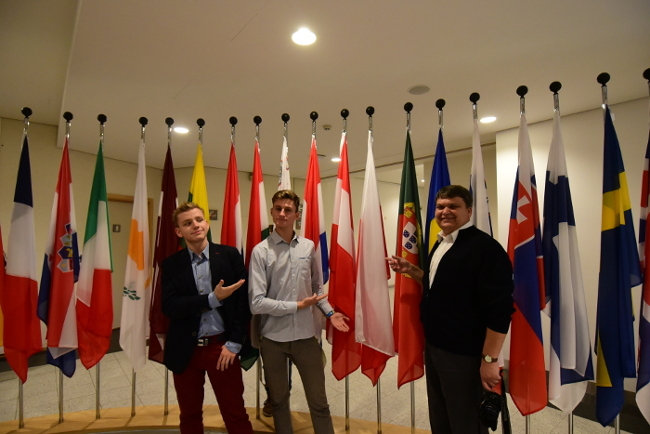

 Jonasz Mularz z IIG i Paweł Kubacki z IIA pojechali na tydzień do Brukseli w nagrodę za wygrany konkurs filmowy „Aglomeracja Opolska – Odetchnij Głęboko”. Zwiedzili Parlament Europejski, Brukselę i jeszcze dodatkowo Brugię. – Spotkaliśmy się również z europosłanką Danutą Jazłowiecką, która patronowała konkursowi, a następnie zaprosiła nas do Belgii – relacjonuje Jonasz. Relację z wyjazdu można obejrzeć tu: